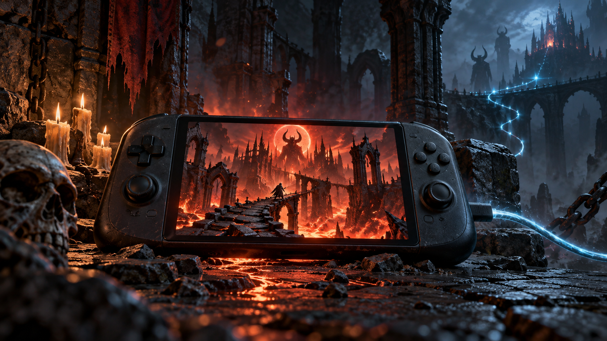

Diablo IV Launches on Switch 2
Diablo IV is now on Switch 2 for $69.99 with both expansions, cross-progression, touch menus and a 40 FPS mode, but it still requires internet.

What happened
Diablo IV: Age of Hatred Collection is now available digitally on Nintendo Switch 2. Nintendo's September 16 launch notice lists a US price of $69.99 and confirms that the package includes the base game, Vessel of Hatred, and Lord of Hatred. Blizzard launched the port alongside Season of Hell's Legacy, its anniversary season for the series.
Blizzard's official Switch 2 FAQ details two graphics presets. Quality mode targets 30 frames per second at 1080p in handheld play and 1440p while docked. Performance mode targets 40 FPS at 1080p in both configurations, although docked 40 FPS requires a display capable of 120 Hz or more. Those figures are official targets, not a promise that every scene will hold them without a drop.
The version supports touch navigation for most menus, the map, and inventory, plus USB mouse and keyboard input, controller rumble, accessibility tools, and Nintendo's GameChat. Joy-Con 2 mouse controls are not supported. Characters and progress can move across supported platforms through a linked Battle.net account, and cross-play is available when the Switch player has Nintendo Switch Online.
Why it matters
The strongest reason to buy this edition is continuity. An existing player can move the same characters between a home platform and Switch 2 instead of starting over, while a newcomer gets the complete Age of Hatred package rather than buying the expansions separately. Cross-progression itself does not require Nintendo Switch Online.
Portability has a hard limit: Diablo IV remains an online game, so the campaign, side quests, couch co-op, seasonal content, and other solo-facing activities still need an internet connection. Without Nintendo Switch Online, Blizzard says players can access those activities but cannot join online parties, trade, enter clans, play PvP, use cross-play, or encounter other players in the open world.
Purchases also have a platform-specific wrinkle. Earned Platinum and Battle Pass rewards carry across linked platforms, but Platinum bought directly on Switch 2 stays on Switch 2. Players who already own Diablo IV elsewhere should therefore treat the new version as another platform license, not as a free entitlement unlocked by cross-progression.
The Arcade World take
This is a better portable conversion than a bare feature checklist suggests. RPG Site tested the game across Switch 2, Steam Deck, PlayStation 4, PlayStation 5, and PS5 Pro and found the 40 FPS mode to be the preferable Switch 2 option. Its hands-on report says the port keeps Diablo IV's visual identity despite reductions to foliage, textures, geometry, effects, shadows, and interface resolution compared with PS5.
That independent test also found real launch caveats. The 30 FPS mode showed hitching and drops, the 40 FPS mode could dip in busy Helltides, and two party teleports froze during roughly six hours of Switch 2 play. Those observations are one reviewer's limited launch-window experience rather than proof of a universal defect, but they are enough to make waiting for patches the sensible choice for performance-sensitive buyers.
The always-online rule is the larger mismatch. A handheld version expands where Diablo IV can be played physically, but not where it can be played reliably. Commuters, travelers, and anyone with unstable Wi-Fi should judge the purchase around connectivity first and visual quality second.
What happens next
Blizzard has not announced an offline mode or Joy-Con 2 mouse support, so neither should be expected without a specific future update. The immediate things to watch are patches for hitching, party freezes, interface clarity, and frame-rate drops in dense endgame events.
New buyers should begin with performance mode in handheld play and compare quality mode only if sharper presentation matters more than responsiveness. Docked players who want the 40 FPS option should confirm that their television or monitor accepts a 120 Hz signal. Existing players should verify their Battle.net and Nintendo account links before creating or moving characters, then keep real-money Platinum purchases on the platform where they plan to spend them.
The confirmed proposition is clear: Switch 2 now has the complete current Diablo IV package, cross-platform character continuity, and a viable 40 FPS portable mode. The unresolved question is how quickly Blizzard can smooth the launch build—and the permanent trade-off is that portable does not mean offline.
Sources and further reading
Keep exploring
Open the Game Room or visit the latest stories.